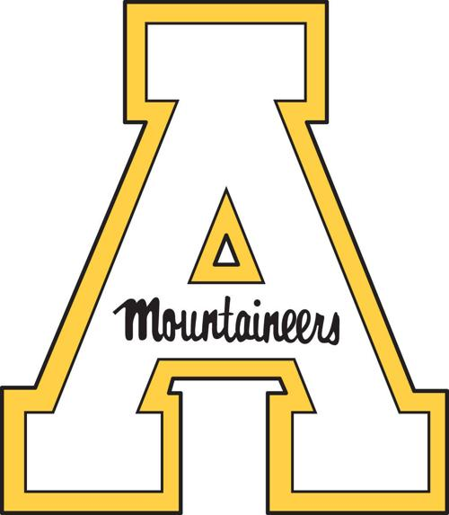

Dustin Roten
Ph.D. Candidate | Atmospheric Scientist | STEM Educator
dustin.roten@utah.edu

C.V./Résumé
Teaching
Research
Biography
I grew up in northwestern North Carolina and attended Appalachian State Univeristy (Go 'Neers!). It was there that I double majored in Physics and Mathematics. During my time as an undergraduate, I served as a research assistant in ASU's Ion Trap Laboratory under the direction of Dr. Tony Calamai. After graduating, I spent a year teaching Mathematics at Ashe County High School (where I received my own high school diploma!) and a semester teaching Physics at Wilkes Community College. I then returned to ASU to complete my M.S. in Engineering Physics and M.A. in Mathematics. Here, I worked as a graduate research assistant under the direction of Dr. Eric Marland. Much of my work was focused on sensitivity analyses using atmospheric modeling. I am now a Ph.D. student in the Atmospheric Sciences at the University of Utah, working with Dr. John Lin where I specialize in land-atmosphere interactions. In my free time I am hiking, playing various musical instruments (piano and violin/fiddle), or occasionally working along the New River back home.


Academic & Professional Positions
Things That Interest Me
- I work to understand and characterize CO2 emissions from large urban areas using NASA's collection of Orbiting Carbon Observatory (OCO) satellites. When possible, I can also use ground-based measurement networks to supplement my work. The satellites I use measurements from are the OCO-2 and OCO-3 instruments. (OCO-3 has just been attached to the International Space Station.) Once I have satellite data, I can use atmospheric models to see which cities the CO2 is coming from.
- Other work that I am involved in focuses on understanding how estimates of certain aspects of large point sources (power plants, paper mills, etc.), such has stack height and exhaust velocity, may effect the results of emissions modeling and measurement correlation.
- Another small project of mine involves assisting the Utah Atmospheric Trace Gas & Air Quality (UATAQ) group in maintaining the large ground-based instrument network in the Salt Lake Valley, UT. This network is responsible for monitoring the concentrations of several different atmospheric gases.
- I am fascinated by how society interacts with science and science policy.